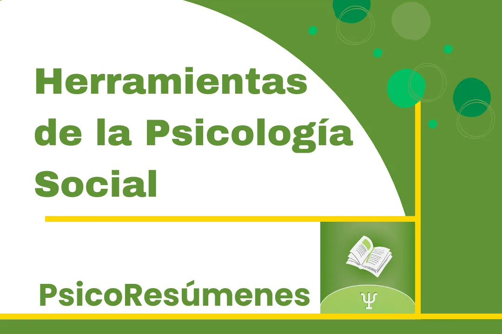
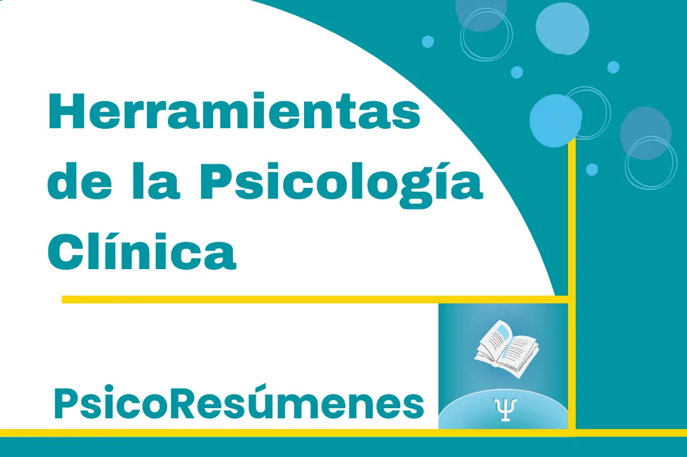
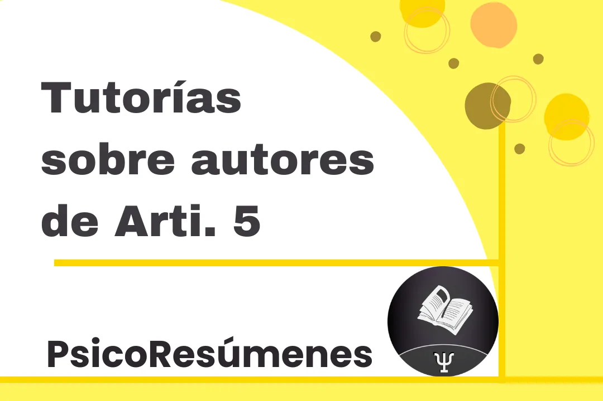

Resúmenes de Procesos CognitivosFacultad de Psicología, UdelaR
|
Psicología Cognitiva: ¿Qué es la percepción?Índice 1) La visión 2) Percepción 3) Experiencia psicológica del ver
6) Construcción del 'percepto' 7) Las 'ideas' y su importancia en la percepción 8) Las ilusiones
10) Sensación y percepción 11) Características de la vía visual
13) Sinestesia 14) Percepción de la forma, del color y del movimiento
16) Agnosias visuales 17) Los colores y su percepción
19) Desarrollo de los bebés: la corteza visual y la retina 20) Métodos psicofísicos La visión Según Crick (1994), para estudiar la consciencia el camino más fácil es estudiar el funcionamiento del sistema visual, ya que entendiendo cómo percibimos vamos a entender más el cerebro y por lo tanto la consciencia. 3 cosas que Crick destaca son:
PercepciónOcurren muchísimas cosas entre que abrimos los ojos y el acto de ver. El proceso de ver no es uno sencillo, es un proceso psicológico que parte de elementos físicos y cuyos resultados dependen, en general, de lo que ocurre en el cerebro. Algunos de esos elementos físicos son:
Aún no se sabe a ciencia cierta porque percibimos las cosas como las percibimos. Necesitamos los ojos para ver pero vemos con el cerebro, tan así que si separaramos el cerebro de los ojos, no veríamos aún si los ojos estuvieran en perfectas condiciones. De hecho, si tuviéramos daño en el área occipital del cerebro, en la corteza visual primaria, aunque el resto del cerebro y de los órganos visuales funcionaran perfectamente, no veríamos, aunque sí existen excepciones en tanto que seríamos capaces de percibir ciertos movimientos que se procesan en otros núcleos. Imagen retiniana: La imagen en la retina puede ser ambigua y representar 2 imágenes en contextos completamente distintos, esto ocurre porque vemos un mundo tridimensional (3D) en retinas bidimensionales (2D). En rasgos generales la percepción visual arranca con un objeto físico situado en el mundo, el cual proyecta luz mediante una imagen en la retina, esa imagen tiene ciertas características que no las percibimos, como por ejemplo:
Luego hay un segundo proceso que es de reconstrucción de la imagen del objeto físico en un percepto, el cual es bastante parecido al objeto físico. Este proceso ocurre después de que la imagen se proyectó en la retina y es el cual construye la experiencia psicológica de ver. Entonces, necesitamos los receptores sensoriales y la exploración activa del mundo para percibir, pero es el cerebro el encargado de transformar esa imagen inicial en un percepto coherente que servirá de guía a la hora de interactuar con el mundo. Experiencia psicológica del ver Existen dos teorías que intentan responder la pregunta ¿Cómo hacemos para percibir lo que percibimos?, ambas teorías no son contradictorias sino que pueden complementarse. Una de las teorías implica un proceso en el cual ocurren varias operaciones:
La otra teoría, llamada teoría corporizada, dice que no necesitamos de inferencias ni ideas para percibir. Proceso perceptivo Podemos dividir este proceso en dos grandes fases con 3 puntos de anclaje bien diferenciados. Los puntos de anclajes son:
El proceso comienza con el estímulo distal, que genera una imagen en nuestros receptores, en el caso de la visión y la silla, la silla que es el estímulo distal genera una imagen en nuestras retinas, esa imagen en la retina es el estímulo proximal, el cual tiene ciertas características que hacen que sea muy distinto realmente del estímulo distal. El estímulo proximal constituye el punto de partida desde el cual el cerebro intentará formar el percepto, que es el tercer punto de anclaje y es el que representa adecuadamente al estímulo distal. El estímulo distal es lo que llamamos “la realidad” y es lo que asumimos que existe, aunque no sabemos si existe. No tenemos acceso real a los estímulos distales, el acceso que tenemos a estos es mediado por los sentidos. DesencajesLos desencajes son características de nuestra estructura que, a priori, no encajan con las características del mundo físico que habitamos. Estos desencajes son lo que nos permitieron, de manera evolutiva, adaptarnos al mundo en que vivimos y permitirnos a su vez, poder adaptarnos a otros mundos que potencialmente podríamos habitar. Supresión sacádica: cuando movemos los ojos (en las sacadas), durante el comienzo del movimiento y hasta que dejamos de moverlos, no vemos. Percibimos el mundo 100 milisegundos atrasados a lo que ocurre en el mundo físico. Ventajas de los desencajes Si no hubieran desencajes no hubiésemos desarrollado todos nuestros mecanismos que nos permiten sobrevivir en el mundo y sobrevivir en distintos mundos posibles (trópico, ártico, desierto). El desencaje no es un problema a superar sino que es la base de lo que va a emerger como nuestras capacidades perceptivas. Nuestros sensores no encajan perfectamente con las características del mundo físico. La percepción está al servicio de garantizar la supervivencia, debido a las retinas 2D recibiendo imágenes 3D, todas esas imágenes son ambiguas, por lo tanto la función primordial de la percepción es “superar” esa ambigüedad del mundo. ¿Cuál es la función de la percepción?Su función es superar la ambigüedad de las imágenes que percibimos debido a los desencajes. Por lo tanto, percibir es elegir entre alternativas. “Superar” la ambigüedad es elegir entre alternativas. Existen infinitos objetos del mundo a los que les corresponde un mismo patrón de estimulación en la retina. La manera de superar esa ambigüedad es reduciendo la incertidumbre de las imágenes. La percepción busca reducir las alternativas que el mundo físico genera en la interacción con nuestros sensores. En definitiva, la imagen que se proyecta en nuestras retinas poco tiene que ver con el mundo que percibimos, o con lo que necesitamos percibir para sobrevivir. Construcción del 'percepto'Teniendo en cuenta las siguientes cosas: 1) Percibir es una tarea difícil porque significa deconstruir un percepto a partir de una imagen muy distorsionada de la realidad, imagen que tiene las siguientes características:
2) Al interactuar con los objetos:
Básicamente lo que hacemos es agregar información a ese estímulo proximal, información que viene de la interacción que tenemos con los objetos del mundo, que lo que hace es que construyamos conocimiento sobre los objetos. Podemos decir que construimos el percepto del objeto a partir de:
Las 'ideas' y su importancia en la percepciónEsa idea que tenemos del objeto parte de la experiencia previa que hemos tenido de los objetos, digamos que esa idea que tenemos es, entonces, una representación del objeto, esa representación es prácticamente una copia del objeto que hemos percibido anteriormente y que queda en nuestra mente. Si quisiéramos saber las características de esa copia, por ejemplo: ¿cómo es? ¿tiene todas las características del objeto real? Esas preguntas serían muy complicadas de responder desde un discurso fisicista, pero desde una perspectiva más conceptual, se podría decir que esas ideas son básicamente entidades simbólicas que representan al objeto o algunas de sus propiedades. Desambiguar las señales del entorno implica “agregar” información, que muchas veces aparece en forma de “ideas” sobre el funcionamiento del mundo. Para decodificar sombras, por ejemplo, “usamos” una ley que está instaurada en el cerebro, que dice que la luz viene de arriba, esta ley fue construida en nuestro desarrollo desde que nacemos en adelante debido a que durante toda nuestra vida hemos visto que la luz viene de arriba, ya sea del sol, de lámparas, etc. Esa construcción ocurre con muchas cosas y es la base de los prejuicios. Estas ideas o conocimiento que se le agrega al estímulo para desambiguarlo pueden originarse tanto de conocimiento formal del mundo como de la exploración (en términos de acciones) que realicemos sobre los estímulos. En nuestra percepción prima el conocimiento del mundo que tenemos, y es por eso que podemos desambiguar estímulos que reflejan varias situaciones las cuales sin ese conocimiento serían igual de posibles. La percepción siempre buscará una descripción funcional para sus propósitos, qué es garantizar la supervivencia. Según Crick (1994), lo que queremos saber, y esa es la razón de porque tenemos un sistema visual tan desarrollado, es que hay ahí afuera, que hace y que va a hacer probablemente. Necesitamos ver los objetos, sus movimientos y saber algo acerca de su “significado” en tanto que suelen hacer esos objetos o para que suelen utilizarse, o cuando y en qué circunstancias se los ha visto antes, y todo esto lo necesitamos en “tiempo real”. Las ilusionesLas ilusiones visuales son una herramienta muy importante para el entendimiento del funcionamiento del sistema visual. Las ilusiones no son errores, sino que son otra forma de adaptación del medio. Toda percepción se inicia de un proceso Bottom-Up (de abajo hacía arriba); este proceso parte del estímulo y va generando distintos niveles de procesamiento hasta llegar a un concepto o idea. Sin embargo, también es necesario que haya un proceso Top-down (de arriba hacía abajo) que está generado por las expectativas de lo que se espera encontrar, o sea, se parte de una idea y se llega al estímulo. Ilusión de Ponzo
Procesos bottom-up y top-down La percepción es la conjunción de estos dos procesos. No se puede ver únicamente por procesamiento Bottom-Up, ya que se debe tener una idea que le dé sentido a lo que veo, si no hay sentido no hay percepción. Por otro lado, las alucinaciones, por ejemplo, se dan cuando únicamente hay percepción Top-Down. Aún no se ha determinado, sin embargo, si la alucinación se debe a la reducción del procesamiento Bottom-Up o al aumento del procesamiento Top-Down. En conclusión, en tanto percepciones, no existe una idea que no provenga de un estímulo o de datos sensoriales. Al mismo tiempo, no habría datos sensoriales interpretables (perceptos) sin expectativas que den forma a aquello que reciben nuestros sensores. Por todo esto, es necesario ver para creer pero es fundamental creer para ver, tenemos que tener ideas para percibir. Cuando lo que sentimos, en tanto estímulos, son muy poco informativos, es imprescindible el proceso Top-Down para conformar el percepto. Si el estímulo es muy rico e informativo, por el contrario, el proceso Bottom-Up es suficiente para que, bajo ciertas condiciones, pueda desencadenar la percepción. Las ilusiones Bottom-Up se deben a que las células del sistema nervioso, especialmente las de la visión, rebotan (post-efecto) cuando les cambiamos su patrón de estimulación. Sensación y percepciónLa sensación es todo aquello que se puede describir a partir de la actividad de los receptores sensoriales y la vía sensitiva de cada modalidad, corresponde a la activación de los receptores sensoriales y al proceso que denominamos transducción. Por otro lado, la percepción es todo el proceso que permite finalmente acceder a un percepto. Es la organización e interpretación de la información sensorial en algo con sentido, implica la actividad no solo de nuestros órganos sensoriales, sino también de nuestro cerebro y la activación de conocimiento. La percepción es la puesta en conjunto de toda esa información sensorial para generar el percepto, hay que recordar que toda esa información sensorial proviene de distintas modalidades sensoriales, ya que los perceptos se forman no únicamente a través de una vía, sino de varias a la vez. Para entender esto es imprescindible comprender qué es:
Características de la vía visual El lugar del campo visual de un ojo que no es captado debido al punto ciego, es “rellenado” por la información captada por los receptores que rodean al punto ciego, esto quiere decir que el cerebro “rellena” intuitivamente ese campo visual cegado con la informacion que cree que debería estar ahí. Así mismo, el punto ciego de un ojo es detectado por el campo visual del otro ojo la mayoría del tiempo, por todo esto es que no podemos percibirlo a menos que lo hagamos voluntariamente mediante ejercicios. La impresión que tenemos de que vemos con igual precisión todos los objetos que nos rodean es una ilusión producto del movimiento coordinado de los ojos y de la capacidad constructiva del cerebro. Por eso para poder percibir los mínimos detalles de un objeto es necesario “fovealizarlo”, en tanto apuntar los receptores de la fóvea hacia ese objeto. Es necesario que movamos nuestro globo ocular constantemente, ya que este movimiento nos permite ver el mundo, si no moviéramos los ojos nuestro campo de visión se reduciría y las cosas comenzarían a desaparecer ya que no las veríamos. Vía visual Iris: es un músculo. Pupila: es un agujero, el cual se agranda (midriasis) y se achica (miosis) mediante el movimiento del iris. La pupila puede agrandarse o achicarse en función de:
La midriasis no es automática ya que es un reflejo del sistema simpático, el cual tarda un poco en expresarse. Córnea: su tarea es enfocar los rayos de luz hacia la retina:
Cristalino: Es una especie de lente, aunque no necesariamente aumenta las cosas que vemos, sino que más bien las enfoca. El trayecto que hace la luz desde el exterior hacia adentro del ojo es el siguiente:
Retina: es donde tenemos las células transductoras, en este caso fotorreceptores. A su vez tenemos otros tipos de células que funcionan en conjunto para poder enviar los estímulos transducidos hacia la corteza cerebral mediante el nervio óptico. Nervio óptico: está conformado por los axones de las células ganglionares de la retina. En la retina de cada uno de nuestros ojos tenemos 1 millón de células ganglionares, y 100 millones de fotorreceptores. Por lo tanto, en total entre los dos ojos tenemos 2 millones de células ganglionares y 200 millones de receptores. Fóvea: es la parte de la retina que nos permite ver con nitidez el mundo exterior. Únicamente contiene los fotorreceptores llamados conos, los cuales son capaces de percibir las ondas electromagnéticas que dan lugar a los colores. La fóveaEn la fóvea cada fotorreceptor tiene asignado su propia célula ganglionar, mientras que en la periferia de la retina cada célula ganglionar puede tener hasta 1000 fotorreceptores asignados. Es por todo esto que no podemos enfocar con la periferia de la retina, ya que además de los fotorreceptores de la periferia, que en general son bastones (solo detectan blanco y negro), están distribuidos más espaciadamente (hay una baja densidad de bastones en la periferia). En la periferia se percibe el movimiento pero no la información específica de lo que se mueve, esto ocurre ya que como podemos mover los ojos, solo necesitamos detectar movimiento lo cual hará que podamos apuntar el ojo en dirección donde vimos el movimiento para enfocarlo y poder observar nítidamente que fue lo que se movió. Esto garantiza la supervivencia con un mínimo costo computacional, nos ahorra energía y el cerebro no se “sobrecarga”. La fóvea está presente en todas nuestras vías visuales. En resumen, en la retina tenemos fotorreceptores que no están uniformemente distribuidos. En la fóvea tenemos únicamente conos, en la periferia tenemos fundamentalmente bastones y muy pocos conos. El siguiente elemento que es importante recordar de nuestras vías visuales es el campo receptivo. Es el área de la retina en la cual la célula está conectada a la región del campo visual a la cual responde esa célula. En la fóvea tenemos muchos campos receptivos solapados y pequeños, en la periferia los campos receptivos son más grandes y no hay solapamiento. Nervio óptico: constituido por los axones de las células ganglionares, es quien lleva la información de la retina hacia la corteza encefálica. Sale de la retina a través de un orificio que da lugar al punto ciego, ya que en ese lugar no hay fotorreceptores. Núcleo geniculado lateral: es el primer relevo que hacen los axones de las neuronas ganglionares antes de llegar a las áreas visuales de la corteza. Este núcleo juega un papel importante en la percepción en lo que es la rivalidad binocular, lo que ocurre es que las imágenes recibidas por cada retina “compiten” por unos instantes hasta que una de ellas prevalece y la otra es suprimida, el proceso puede oscilar entre ambas imágenes si las dos tienen un nivel de contraste similar y una saliencia perceptiva equivalente. Esto ocurre porque la percepción sólo admite una imagen en cada instante. Área visual primaria: es la primer área cortical que recibe información directamente del núcleo geniculado lateral, pero no es la única área cortical involucrada en la visión. Es como una estación central desde donde se puede conectar con prácticamente todas las demás estaciones de la red, aunque existen caminos alternativos que permiten arribar a áreas de procesamiento especializadas sin pasar por la estación central. Lóbulo parietal superior: recibe señales relacionadas con los movimientos rápidos así como con el reconocimiento de objetos. En el lóbulo parietal también tenemos un área que computa todo lo relativo a magnitudes, como:
Existen otras áreas corticales que están especializadas en diferentes atributos del estímulo, como:
Este tipo de organización con activaciones independientes es lo que permite explicar fenómenos como la visión a ciegas. No siempre tuvimos esta idea de las zonas específicas del cerebro computando diferentes acciones, en la literatura científica esta idea existe hace aproximadamente 30 o 40 años. Akinetopsia: Daño en el área V5 o MTLa persona solo es capaz de percibir objetos cuando están quietos. Debido a esto, la persona percibe que los objetos aparecen de repente en su campo visual, en diferentes posiciones, dado que mientras estos objetos se están moviendo la persona deja de percibirlos. Se presenta esta agnosia cuando la persona tiene dañada el área V5 o MT de la corteza visual. El siguiente es un ejemplo de Akinetopsia en la serie Dr. House: SinestesiaEs la unión de distintos sentidos. En la sinestesia, cuando percibimos un estímulo sensorial con una base física tangible, como un objeto, una letra o un sonido, a su percepción como tal se le suma una experiencia subjetiva de otra percepción, experimentada de una forma tan real como la primera, pero en ausencia de su correspondiente referente externo. En todos los casos de sinestesia hay un estímulo que evoca o dispara una sensación adicional que se experimenta añadida a la propia del estímulo.
Los inductores pueden ser perceptivos o conceptuales:
La sinestesia no es una difusión ni una enfermedad y no es igual a una alucinación. Las asociaciones no son sinestesia. Asociar una letra al color marrón o que al ver la palabra “banana” escrita la asociemos al color amarillo no es sinestesia, es producto de las asociaciones y las experiencias previas en nuestro contexto social. La más común de las formas de sinestesia es la grafemacolor. Percepción de la forma, del color y del movimiento Los seres humanos somos capaces de reconocer objetos en tan solo 150 milisegundos, siendo esto posible probablemente a partir de la identificación de alguna de las partes del objeto. Identificar un objeto supone identificar las características geométricas básicas del mismo, como:
Ilusión vertical-horizontal
Otras leyes de la Gestalt: leyes de organización perceptiva Principio de la prägnanz(pregnancia): La tendencia de la experiencia perceptiva a adoptar las formas más simples posibles. Principio del cierre: Nuestra mente añade los elementos faltantes para completar una figura. Por ejemplo: Principio de proximidad: El agrupamiento parcial o secuencial de los elementos por nuestra mente basado en la distancia. Por ejemplo: Principio de simetría: Las imágenes simétricas son percibidas como iguales, como un único elemento, en la distancia. Principio de continuidad: Los detalles que mantienen un patrón o dirección tienden a agruparse juntos, como parte de un modelo. Se perciben elementos continuos aunque estén interrumpidos entre sí. Principio de dirección común: Implica que los elementos que parecen construir un patrón o un flujo en la misma dirección se perciben como una figura. Principio de la relación entre figura y fondo: Afirma que cualquier campo perceptual puede dividirse en figura contra un fondo. La figura se distingue del fondo por características como: tamaño, forma, color, posición, etc. Agnosias visuales Son la incapacidad de organizar la información sensorial en una forma determinada mediante la discriminación del entorno del estímulo frente al fondo. Estas funciones parecen relacionarse con las del área V2. Prosopagnosia: es la dificultad de una persona para reconocer caras, incluyendo la suya propia. Si bien la persona puede describir sin problemas el tamaño de las cejas o la forma de la boca, le es imposible agrupar toda esa información para identificar una cara en concreto. Acromatopsia: incapacidad de una persona para recibir colores, sin que el trastorno sea debido a problemas de los receptores de la retina. Se presenta cuando se tiene el área V4 de la corteza visual dañada. El mundo es percibido en tonalidades de grises, aunque en general se conserva la agudeza visual y se mantiene intacta la percepción del brillo, lo cual permite diferenciar más de 100 matices de colores. Los acromatópsicos pierden la capacidad de soñar en colores e incluso de imaginarlos, lo cual lleva a que eventualmente se pierda la memoria referida al color. Akinetopsia: la persona solo es capaz de percibir objetos cuando están quietos, debido a esto, la persona percibirá que los objetos aparecen de repente en su campo visual, en diferentes posiciones, dado que mientras estos objetos se estén moviendo la persona dejará de percibirlos. Se presenta esta agnosia cuando la persona tiene dañada el área V5 o MT de la corteza visual. Los colores y su percepción Los colores no existen en el mundo físico. El color es una propiedad psicofísica, y la experiencia perceptiva de ellos que compartimos los seres humanos surge de la común organización neurobiológica que tenemos. La teoría tricromática es la que explica como percibimos los colores, está dice que tenemos tres fotopigmentos diferentes en nuestros fotorreceptores de color (conos). Una parte importante del procesamiento del color parece realizarse en el área V4. Las lesiones en esta área producen la pérdida de la visión en colores, o acromatopsia. Ilusiones de color
Percepción del movimiento El movimiento es una experiencia directamente codificada por el sistema visual. La percepción del movimiento no se basa en ningún tipo de proceso intuitivo. Post-efectos: son sensaciones de movimiento que quedan después de una estimulación provocada por un objeto en movimiento. Lo que ocurre es que después de mirar un objeto en movimiento constante durante un corto periodo de tiempo, al fijar la vista en un objeto estático, observaremos a este último objeto moviéndose. A nivel cortical, la información sobre movimiento global parece comenzar con neuronas ubicadas en el área V5, las cuales reciben directamente muchas de las salidas de las neuronas del área V1. Si tenemos una lesión en el área V5, también conocida como área MT, perdemos un atributo visual fundamental como es el movimiento. Un ejemplo de esto son las personas con akinetopsia. El procesamiento que hacemos de la información de los objetos en movimiento es distinta al procesamiento de la información de los objetos estáticos. Para los objetos en movimiento aplicamos mecanismos de predicción de lo que va a pasar, esto se debe a que los objetos en movimiento “tienen historia” y podemos usar esa historia para predecir lo que probablemente vaya a suceder en el futuro inmediato, de esta forma evitamos las demoras neuronales que tenemos en la percepción de lo estático. Esto es aplicado porque justamente son los objetos en movimiento los que podrían amenazar nuestra supervivencia. Este procesamiento se hace de esa forma debido a que las cosas que percibimos demoran entre 70 a 100 ms en llegar a la consciencia. El movimiento es el origen de la sensación: es un medio privilegiado a través del que ejecutamos nuestras primeras interacciones con el mundo, cuando estamos en el útero y nuestros protosensores comienzan a aparecer. Estos necesitan ser estimulados de alguna manera para poder especializarse en la transducción de cierta energía específica, está estimulación es proporcionada por el movimiento. El movimiento es el proveedor de estimulaciones para el feto:
Es por todo eso que el movimiento resulta una propiedad fundamental para el ver. Algo se debe mover para que podamos verlos, si está quieto, no lo vemos. Es por eso que movemos los ojos aproximadamente 100 mil veces por día. Cuando miramos algo fijamente, el objeto no desaparece ya que tenemos micromovimientos oculares en las fijaciones, estos no son perceptibles pero tienen la función de mantener persistentemente la visión en un punto. Desarrollo de los bebés Las primeras etapas de la vida son determinadas biológicamente por periodos críticos o sensibles, durante los cuales el niño presenta una mayor sensibilidad a determinado tipo de estímulo. Este tipo de estimulación parece ser necesaria para el desarrollo de ciertas habilidades. Las características del entorno pueden determinar también el desarrollo de funciones biológicas necesarias para percibir el mundo de forma adaptativa. Métodos usados en bebés para determinar el desarrollo de la percepción
Desarrollo de la corteza visual y retina La corteza visual de los bebés presenta un desarrollo parcial en el nacimiento, y se desarrolla más entre los tres y seis meses después de haber nacido. La retina de los bebés difiere de la de los adultos en su forma, tamaño y distribución de fotorreceptores. Un bebe tiene que ver un objeto a seis metros aproximadamente para ver lo mismo que un adulto a 120 metros. Los bebés son capaces de ver en colores recién a partir del cuarto mes. Los bebés tienen la capacidad para percibir movimiento después de nacer, pero no perciben el movimiento como los adultos. A partir de los dos meses recién pueden hacer movimientos oculares que les permiten seguir un objeto móvil. Recién a los tres meses de vida los bebés pueden dirigir ambos ojos hacia un objeto en concreto, por lo tanto no detectan hasta ese momento la profundidad. Entre los 3 y 6 meses de vida son capaces de percibir la información tridimensional. La percepción de rostros es una de las capacidades más tempranamente desarrolladas, en especial para el rostro de la madre. Los bebés perciben tempranamente en un rostro:
Los bebés pueden diferenciar a la madre de otras mujeres gracias, entre otras cosas, a el alto contraste del borde, entre la línea oscura del pelo y la frente clara de ambas personas. Métodos psicofísicos Son la herramienta metodológica por excelencia en el estudio científico de los procesos perceptivos:
Las mediciones psicofísicas implican mediciones del comportamiento que revelan procesos internos. La psicofísica es a los psicólogos lo que el bisturí es a los médicos. Los métodos psicofísicos abordan los problemas que surgen de la formulación de cuatro preguntas básicas sobre la percepción:
Problema de la discriminación Problema que plantea una ecuación donde se mide cual es la diferencia mínima que somos capaces de detectar entre dos estímulos, siendo uno de ellos estándar y uno de ellos una constante. El estímulo constante se puede encontrar en cada modalidad sensorial. Está constante, sin embargo, no se mantiene cuando las intensidades que se evalúan están o muy próximas a la zona del umbral absoluto o son muy altas:
Los siguientes métodos psicofísicos permiten identificar el umbral absoluto de detección y la diferencia apenas perceptible entre un estímulo estándar y el de comparación.
Bibliografía utilizada:
|

Tutorías particulares Tutorías por Zoom, tutorías grabadas y clases de consulta sobre varias materias de facultad. Consulta por más información al celular 098 053 967 ¡Leé más acá!  Herramientas de la Psicología Social Preparación particular o grupal del examen, parciales, acompañamiento del curso o de temas especificos. Más información  Herramientas de la Psicología Clínica Preparación particular o grupal del examen, parciales, acompañamiento del curso o de pruebas psicológicas específicas. Más información  Articulación de saberes V Preparación particular o grupal del primer parcial. Tutorías de autores específicos como Alvaro, Torres, Salazar, Fernandez y Guattari. Mentorías para realizar el segundo parcial grupal. Más información 
Modalidades de exámenes Enterate de las características de todos los exámenes de la carrera. ¿Qué modalidad es? ¿Cuántas preguntas son? ¡Lee más acá! 
Certificados médicos ¿Qué hago si me enfermo el día del examen? ¿Cómo tramito el certificado médico? ¿Que me posibilita presentar un certificado médico? ¡Leé más acá! |